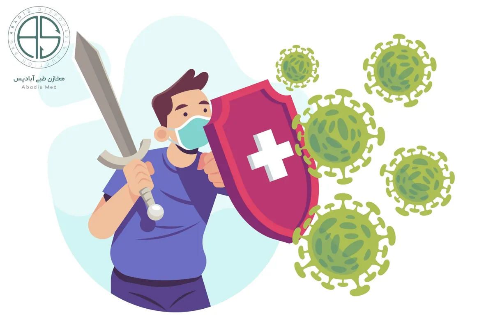

عفونت
عفونت چیست؟ بشر از ابتدای آفرینش همواره در حال پیدا کردن راه هایی جهت محافظت خود در مقابل عوامل طبیعی مثل سرما، گرما و بسیاری از عوامل بیماری زا و عفونت زا بوده و هدف وی بقای نسل خویش بوده است.
در تعریف لغوی عفونت، فاسد شدن یا برگشتن طعم چیزی بیان می شود؛ اما به خاطر وجود ابعاد گسترده آن به ذکر برخی تعاریف تخصصی می پردازیم.
۱- اختلال در علائم حیاتی اعم از درجه حرارت و تغییر تعداد گلبول های خون و بر هم زدن تعادل طبیعی بدن، توسط ارگانیزم های بیماری زا
۲- استقرار عوامل متنوع بیماری زا شامل انواع باکتری، ویروس، قارچ و انگل ها در بخش های مختلف بدن میزبان
در نتیجه عفونت زمانی بروز می کند که عامل بیماری زا وارد بدن میزبان شده و با تحریک سیستم ایمنی باعث اختلال در عملکرد طبیعی بدن می شود.
لازم به ذکر است، حالت حاد بیماری زمانی اتفاق می افتد که عامل مهاجم بتواند به طور فعال و زنده در خارج از سیستم ایمنی بدن فرد باقی بماند. اما در صورتی که وارد سیستم ایمنی بدن شده و به جهت مقاومت در برابر انهدام خود، نقطه ای از بدن میزبان را برای تجمع انتخاب کند، شاهد حالت مزمن بیماری خواهیم بود.
پس در ابتلا به یک عفونت، نه تنها وجود قابلیت پذیرش بیماری در انسان و کاهش مقاومت عمومی بدن او لازم است، بلکه میکروب مهاجم نیز باید از قدرت بیماری زایی کافی برخوردار باشد. تا بتواند شرایط مناسب و مساعدی برای ابتلاء به بیماری ها را فراهم نماید.
بدن ما برای دفاع در برابر عوامل ایجاد کننده عفونت یا همان میکروارگانیسم ها (که مهمترین آنها عبارت اند از: ویروس ها، باکتری ها، ریکتزیا ها، قارچ ها و انگل ها) مجهز به موانع بازدارنده و سیستم های دفاعی قوی به شرح زیر می باشد.
۱- پوست: به دلیل دارا بودن PH ویژه، اسید های چرب و لیزوریم ها اولین و قوی ترین سد دفاعی بدن است.
۲- سطوح مخاطی: معده با تغییرات PH و دستگاه فوقانی تنفس با حرکات مداوم مژک ها و ترکیب ویژه ترشحات بزاق و مجاری مختلف بدن عمل دفاعی انجام می دهد.
۳- سیستم ایمنی: عملکردهای گوناگون سیستم دفاعی در خارج از بدن برای جلوگیری از عوامل عفونت زا نقش خود را به خوبی ایفا می کنند. اما در خارج از بدن عوامل بیماری زای متعددی وجود دارند که ممکن است در صورت بروز اختلال در هر یک از مکانیسم های دفاعی بدن، بتوانند به آن دخول نموده و ایجاد بیماری کنند.
عوامل بیماری زا برای ورود به بدن ما یکی از راه های زیر را انتخاب می کنند:
۱- تماس مستقیم: از طریق ترشحات بدن همچون خلط، چرک، ادرار و ترشحات زخم های باز.
۲- تماس غیر مستقیم: تماس با وسایل و ابزارهای آلوده به عوامل بیماری زا مانند ظروف، رخت خواب و ملحفه، تجهیزات و ابزارهای طبی مشترک و غیره.
۳- سرایت از طریق حاملین و ناقلین میکروارگانیسم ها: شامل انسان، حشرات و برخی عوامل بیماری زای محیطی (گرد و غبار / آب و هوا) که به راحتی عفونت ها را از فردی به فرد دیگر انتقال می دهند.
تعریف عفونت بیمارستانی
سقراط سال ها پیش در کتابی درباره عفونت های زایمانی و علل شیوع آن مطالبی نوشته بود. اما شناخت گسترده و دقیق انواع عفونت ها در چند ده سال اخیر مرهون ساخته شدن آسایشگاه ها و بیمارستان های خاصی برای بیماری های مرگ آوری همچون سل، آبله، طاعون و جزام می باشد.
عفونت بیمارستانی (Infections Nasocomial) به عفونتی اطلاق می شود که بیمار در زمان بستری بودن به آن دچار نبوده و ۴۸ تا ۷۲ ساعت بعد از پذیرش بیمار در بیمارستان ایجاد می شود، به شرط آنکه در دوره کمون آن نبوده باشد.
عفونت های بیمارستانی یک مشکل جدی مراکز بهداشتی درمانی می باشند و هرساله هزینه های زیادی را به بیماران و مراکز بهداشتی درمانی تحمیل می کنند. در حال حاضر در کشورهای پیشرفته میزان این عفونت ها حدود ۱۰٪ موارد بستری و در کشورهای در حال توسعه حدود ۲۵٪ تخمین زده می شود.
زمانی بیماران ترخیص شده در گروه مبتلایان به عفونت بیمارستانی گنجانده می شوند که:
الف) ۷ الی ۱۰ روز پس از مرخص شدن بیمار که به علت داخلی بستری بوده و هیچ نوع جراحی خاصی بر روی وی انجام نشده است.
ب) تا ۳۰ روز پس از ترخیص به علت جراحی، در صورتی که ایمپلنت برای مریض کار گذاشته نشده باشد. مانند: لاپاراتومی، آپاندکتومی و هرنی.
ج) تا یک سال بعد از جراحی که برای بیمار ایمپلنت کار گذاشته شده باشد. هنچون جراحی های ارتوپدی که در آن پیچ، پین، پلاک و … در بدن بیمار کار گذاشته می گردد.
به طور کلی سه گروه از افراد در معرض ابتلاء به عفونت های بیمارستانی هستند:
۱- فرد بیمار
۲- کارکنان سیستم درمانی
۳- افراد جامعه
هر یک از اعضای بدن انسان می تواند دچار عفونت بیمارستانی گردد ولی در این بین عفونت دستگاه ادراری با سهم ۴۲% در رده ی اول قرار دارد. پس از عفونت ادراری، عفونت های ناشی از زخم جراحی با ۲۴٪، عفونت دستگاه گردش خون با ۵ الی ۱۰٪ و عفونت دستگاه تحتانی با ۱۱٪ و عفونت پنومونی با ۱۵٪ شایع ترین انواع عفونت بیمارستانی هستند.
در مطالعات ﺍﻧﺠﺎﻡ ﺷﺪﻩ، ﻋﻔﻮﻧﺖ ﺍﺩﺭﺍﺭﻱ، ﺷﺎﻳﻊ ﺗﺮﻳﻦ ﻭ ﭘﻨﻮﻣﻮﻧﻲ ﻛﺸﻨﺪﻩ ﺗﺮﻳﻦ ﻋﻔﻮﻧﺖ ﻫﺎﻱ ﺑﻴﻤﺎﺭﺳﺘﺎﻧﻲ ﻣﺤـﺴﻮﺏ ﻣـﻲگردند. با این حال در بسیاری ﺍﺯ ﻣﺮﺍﻛﺰ بهداشتی درمانی، ﻋﻔﻮﻧﺖ ﺑﻴﻤﺎﺭﺳﺘﺎﻧﻲ ﺩﺳﺘﮕﺎﻩ ﮔﺮﺩﺵ ﺧﻮﻥ، ﻋﻠﺖ ﺍﺻﻠﻲ ﻣﺮﮒ ﺑﻴﻤﺎﺭﺍﻥ ﻣﻲ ﺑﺎﺷﺪ.
چرا ﻋﻔﻮﻧﺖ های ﺑﻴﻤﺎﺭﺳﺘﺎﻧﻲ با اهمیت هستند؟
عفونت های بیمارستانی عواقبی دارند که موجب اهمیت بالای آنان می شود. از جمله این عواقب می توان به موارد زیر اشاره کرد:
۱- بیماری و مرگ و میر افراد بستری شده در بیمارستان
۲- بالا رفتن هزینه های ناشی از طولانی شدن استقرار بیمار در بیمارستان و هزینه های ناشی از اقدامات تشخیصی و درمانی راه های انتقال میکروارگانیسم ها در بیمارستان
۳- طولانی شدن زمان ﺑﺴﺘﺮﻱ بیمار ﺩﺭ ﺑﻴﻤﺎﺭﺳﺘﺎﻥ
میکروارگانیسم ها به چه طریقی می توانند منتقل شوند؟
۱- انتقال از طریق هوا (Airborne)
۲- انتقال از طریق تماس (Contact): مهم ترین راه انتقال عفونت های بیمارستانی، تماس است. تماس ﺑﻪ ﺳﻪ زیر مجموعه ﺗﻘﺴﻴﻢ ﻣﻲﺷﻮﺩ :
– تماس مستقیم: تماس سطوح مختلف بدن و منتقل شدن فیزیکی میکروارگانیسم ها بین فرد مبتلا به عفونت و میزبان حساس.
– تماس غیر مستقیم: تماس میزبان حساس با شیء آلوده به میکروارگانیسم ها همچون سوزن، پانسمان، دستکش آلوده و ….
– قطره (Droplet): قطره تولید شده توسط فرد مبتلا به عفونت حین عطسه، سرفه و صحبت کردن و یا حتی ساکشن کردن یا برونکوسکوپی و مواجهه آن قطره با ملتحمه، مخاط بینی یا دهان.
۳- – انتقال از طریق اشیا مشترک و آلوده به میکروارگانسم ها مانند غذا، آب، داروها و غیره.
۴- انتقال از طریق جانداران ناقل همچون مگس، پشه و موش. (لازم به ذکر است که این جانداران اهمیت چندانی در انتقال میکروارگانیسم ها ندارند.)